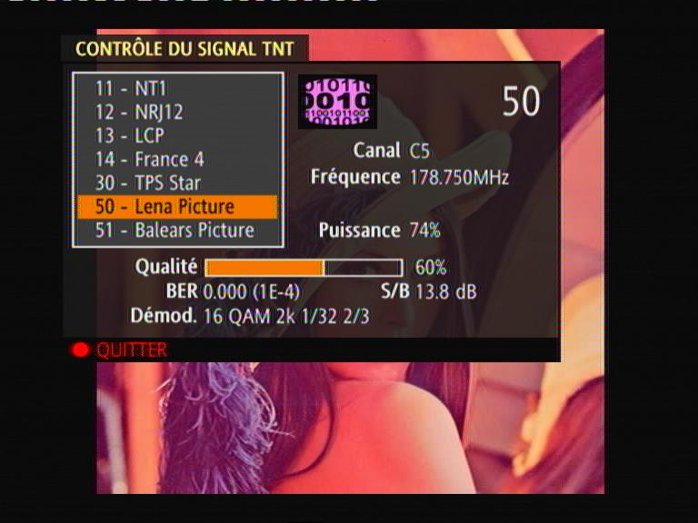
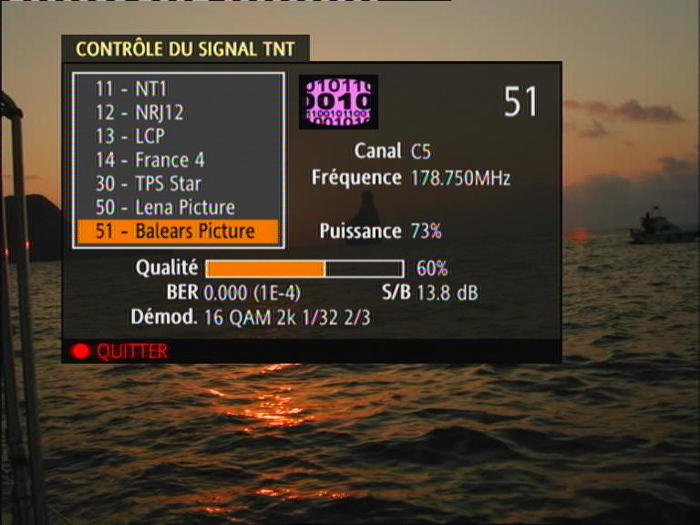

DVB-T emitters are usually very expensive professional devices. Now with a standard PC you can broadcast real DVB-T channels !
Examples to transmit PAL or SECAM analog signals directly to your TV are also presented.
15 pin VGA connector 9.5mm RF connector ------------------- ----------------------- 1 (red signal) <-----> RF signal (central pin) 6 (red ground) <-----> GND


#########################################
#VGA modulator config
Section "Monitor"
Identifier "MonitorDAC"
VendorName "Monitor Vendor"
HorizSync 1.0 - 200.0
VertRefresh 1.0 - 200.0
Mode "dac1"
DotClock 76.50
# PAL/SECAM
HTimings 4064 4064 4072 4080
VTimings 748 748 749 750
EndMode
Mode "dac2"
# DVB-T
DotClock 76.50
HTimings 3656 3656 3664 3672
VTimings 1307 1307 1308 1309
EndMode
EndSection
Section "Screen"
Identifier "ScreenDAC"
Device "Videocard0"
Monitor "MonitorDAC"
DefaultDepth 8
SubSection "Display"
Depth 8
Modes "dac2"
EndSubSection
EndSection
#########################################
This configuration won't be used by default by the X Window server, so
you can leave it in your default X Window configuration.
VideoCard0 is assumed to be the name of your default video
card.
X :1 -ac -screen ScreenDACYour monitor will of course not be able to display anything because the timings are far from correct VESA timings. Unless you are using a very old monitor, there is no chance you can destroy it...
Wait a few seconds and switch back to the starting X11 display (in most Linux distributions Ctrl-F7 does it). Then look at the X11 log file to see if everything was OK (usually in /var/log/XFree86.1.log or /var/log/Xorg.1.log).
Display it on the :1 X11 display:
display -display :1 -window root dvbt.pgm
...
SubSection "Display"
Depth 8
Modes "dac1"
EndSubSection
...
Then by tuning your TV on the VHF channel 5 (176.00 MHz image
frequency) you should see a black and white Lena picture.
As we did not want to generate a 176 MHz signal directly, we use the fact that the VGA DACs generate a lot of harmonics. The real generated DVB-T signal has a central frequency of 25.71 MHz. Then the second harmonic has a frequency of 25.71+2*76.5 = 178.71 MHz which is almost exactly the central frequency of the VHF TV channel 5.
The DVB-T signal is generated with a DVB-T and DVB-H modulator I wrote from scratch. This is the most complicated step because the DVB-T modulation is quite complicated (COFDM modulation). A custom polyphase filter is used to interpolate the baseband COFDM complex signal. Then it is translated to the 25.71 MHz frequency.
I used a patched version of FFmpeg to generate a custom DVB Transport Stream containing two DVB services. Each one contains a still MPEG picture. One of the still picture is the very nice Lena.
For PAL and SECAM, I also wrote a simple TV black and white PAL encoder. Adding color would be possible, but I am not motivated enough to do it :-)